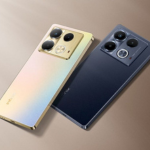

Infinix Note 40, Smartphone Stylish dengan Performa Tangguh
Infinix Note 40 hadir sebagai ponsel kelas menengah yang menawarkan kombinasi fitur premium dan harga yang bersaing. Ponsel ini dibekali layar AMOLED 6,78 inci dengan refresh rate 120 Hz dan tingkat kecerahan hingga 1.300 nits, memberikan tampilan yang jernih dan mulus bahkan di bawah sinar matahari. Ditenagai chipset MediaTek Helio G99 Ultimate dengan RAM 8 GB yang dapat diperluas hingga 16 GB melalui fitur Extended RAM serta penyimpanan internal 256 GB, Infinix Note 40 mampu menjalankan berbagai aplikasi dan game dengan lancar. Kamera utamanya beresolusi 108 MP dengan fitur 3× Lossless Superzoom, serta kamera depan 32 MP yang mendukung Dual Video, cocok untuk kebutuhan fotografi dan konten kreatif. Baterai 5.000 mAh dengan dukungan fast charging 45 W dan pengisian nirkabel MagCharge 20 W memastikan daya tahan optimal. Dilengkapi pula dengan speaker stereo JBL, pemindai sidik jari di bawah layar, sertifikasi IP54, dan fitur NFC, Infinix Note 40 menjadi pilihan ideal bagi pengguna yang menginginkan ponsel stylish dengan performa tinggi dan fitur lengkap di kelasnya.
Selain menawarkan spesifikasi yang tangguh, Infinix Note 40 juga menghadirkan inovasi menarik dari segi desain dan pengalaman pengguna. Dengan bodi ramping berfinishing kaca premium dan pilihan warna elegan seperti Titan Gold, Obsidian Black, dan Vintage Green, perangkat ini tampak modern dan berkelas. Antarmuka XOS 14 berbasis Android 14 membawa berbagai fitur cerdas seperti Smart Panel, AI Wallpaper Generator, dan Battery Master yang membantu mengoptimalkan kinerja serta daya tahan perangkat. Dukungan sistem pendingin Vapor Chamber memastikan suhu tetap stabil meskipun digunakan untuk bermain game berat dalam waktu lama. Berkat kombinasi performa kuat, desain premium, dan fitur inovatif, Infinix Note 40 menjadi representasi sempurna dari smartphone menengah yang menghadirkan pengalaman layaknya flagship dengan harga yang tetap terjangkau.